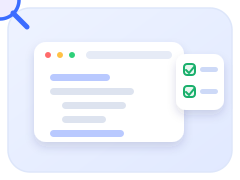
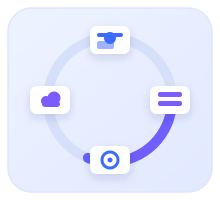
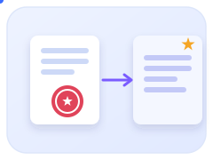
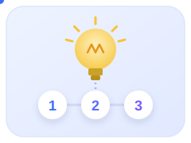

从前端、全栈到产线负责人，每一步都在拉长「做好」的验收链条。
culture · craftsmanship
做好了，才算做了！
魏喜胜 · 品牌域产品部
用三个真实场景，讲清楚我对这句话的理解：交付结果没有被验证，就不算真正完成。
角色边界不断扩大，交付标准也随之升级。
one line
一条主线：
从完成动作，到交付结果
前端阶段
从页面可用，走向代码质量规范，让问题在审查阶段提前暴露。
全栈阶段
从功能实现，走向接口、部署、联调和上线检查的交付闭环。
产线负责人阶段
从系统上线，走向现场验证、异常处理和持续响应。
我的理解是：做好不是完成动作，而是让后续环节少承接问题。
第一个例子：代码审查规范要进入执行，而不是停留在文档。

case 01 · frontend
前端案例：
代码审查规范不能停在“发文档”
▼ 只做到“完成动作”
- 规范写好了，但团队只停留在“知道有这份文档”。
- 审查时仍依赖个人经验，遗漏点不容易暴露。
- 类似问题换个需求还会再出现一次。
▲ 推动规范进入执行
- 宣贯：统一代码审查目标、流程、工具和检查清单。
- 结合真实需求演示清单填写，减少理解偏差。
- 试点期持续答疑和收集反馈，推动规范优化。
这一阶段的“做好”：把个人经验转化为团队可执行的质量规范。
第二个例子：全栈交付要关注完整链路，不只看代码产出。

case 02 · full-stack
全栈案例：
N 元换购的交付闭环
▼ 刚转全栈暴露的问题
- 后端接口可以实现，但初期对接口边界考虑不足。
- 前后端独立推进，容易低估联调和排错时间。
- 部署资料分散，遇到问题时查环境、查配置都耗时间。
▲ 补齐交付闭环
- 借助 AI 提升开发与排障效率，关键逻辑仍逐段校验。
- 提前梳理接口字段、异常返回和联调步骤。
- 后续再做全栈任务时，先预留调试缓冲和上线检查。
这一阶段的“做好”：不只完成开发，还要把联调、部署和上线检查纳入交付范围。
第三个例子：产线系统不是只管软件页面，而是要保证产品身份关系不出错。

case 03 · owner
产线负责人案例：
石湾五码合一现场体验
▼ 现场能感知的问题
- 系统要把瓶、盒、箱、垛的编码关系采准，类似给每件产品建立“身份证关系”。
- 1 月出现约 2500 箱数据上传失败，问题到上传阶段才暴露。
- 箱子已经码垛后再发现异常，现场就要搬运、拆封、返工。
▲ 处理与规划
- 先把旧数据范围限定在 2026/1/7 - 1/8，避免无关数据干扰处理。
- 推动软件异常前置识别，从“上传后发现”前移到“采集/关联阶段识别”。
- 对重码、超码等问题补充剔除、报警和重传处理，减少后段集中返工。
定义问题、厘清边界、适配资源，最后都要让现场少返工、少停顿。
shiwan · key actions
石湾案例重点：
把风险留在上线前
① 厘清边界
1 号机设备关系不透明，暂不全量替换；先确保 2 号机可稳定生产。
② 现场验证
正式跟产当天，围绕数据替换不输密码、取消关联自动聚焦等问题现场验证并快速修正。
③ 适配资源
用操作手册、问题清单、午休窗口更新和跟产响应，把交付延伸到现场可持续使用。
这一阶段的“做好”：不是功能越多越好，而是让现场少返工、少停顿、少误操作。
客户是否继续参照，是对交付质量很直接的反馈。

result
后续项目给了一个
明确反馈
合同里的要求
- 客户新产线合同中明确要求：软件 UI 及基本功能参照石湾小酒线五码合一软件。
- 这不是口头表扬，而是后续项目直接写进要求里的参照。
- 对团队而言，石湾也成为后续产线方案继续优化的基础。
一次交付如果能被后续项目参照，说明它留下了可验证、可延续的结果。
回到米多机会识别三步法：定义问题、厘清边界、适配资源。

principle
米多机会识别三步法：
定义问题 · 厘清边界 · 适配资源
定义问题
先判断真正要解决的是代码问题、联调问题，还是现场结果问题。
厘清边界
哪些必须负责到底，哪些需要阶段推进，先讲清楚再执行。
适配资源
人力、现场窗口、远程支持和 AI 辅助，都要服务于关键目标。
以结果为尺，以本分为底。
closing
与各位共勉
三条提醒
- 做好了才算做了：以结果验收交付，而不是以动作解释过程。
- 问题到我为止：在职责范围内，多向前接住一层结果。
- 发现错误就马上改：越靠近现场，拖延的代价越高。
这就是我现在对做好了才算做了的理解。感谢大家。